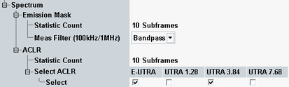

The following parameters configure the spectrum measurement settings. They are contained in section "Measurement Control".

Defines the number of measurement intervals per measurement cycle (statistics cycle, single-shot measurement). This value is also relevant for continuous measurements, because the averaging procedures depend on the statistic count.
For emission mask / ACLR results, the measurement interval is completed when the R&S CMW has measured a full subframe.
Remote command:Selects the resolution filter type for filter bandwidths of 100 kHz and 1 MHz (Gaussian or bandpass filter). For 30 kHz filters, the type is fixed (Gaussian). The filter bandwidth to be used can be configured per emission mask area as part of the limits.
Remote command:Specifies which types of adjacent channels are evaluated for the ACLR results: E-UTRA channels with the same bandwidth as the carrier, UTRA channels with 1.28 MHz / 3.84 MHz / 7.68 MHz bandwidth. For each enabled type, the 1st and 2nd adjacent channels are evaluated.
When you modify the duplex mode or the channel bandwidth, this parameter is automatically set to the default values defined in 3GPP TS 36.141, see Table "Relevant adjacent channel types, depending on duplex mode and E-UTRA channel BW".
Remote command: